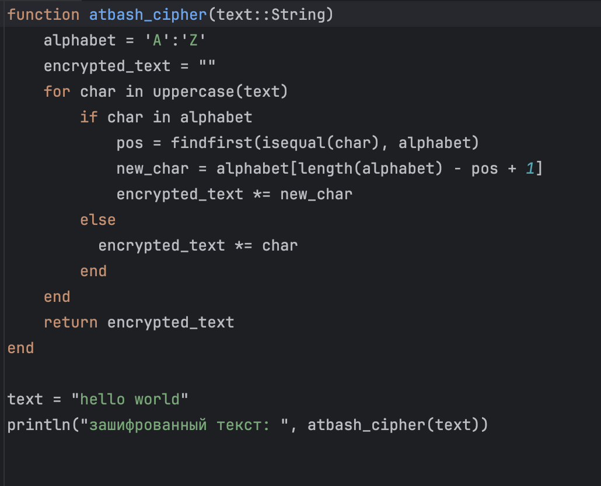

#Цель работы
Целью работы является изучение алгоритмов шифрования Цезаря и Атбаш, принцип работы, реализация на Julia.
Суть шифра Цезаря заключается в том, что происходит смещение всех букв по алфавиту в сообщенгии на некоторый коэффициент k. Декодирование происходит путем смещения в обратную сторону. (рис. [-@fig:001]).
Шифр Атбаш похож на шифр Цезаря, но в данном алгоритме разворачивается весь алфавит, а не какой то маленький сдвиг. (рис. [-@fig:002]).
 # Выводы
В результате выполнения лабораторной данной работы мы научились реализовывать два алгоритма шифрования - Цезарь и Атбаш. Оба алгоритма были реализованы на языке Julia.